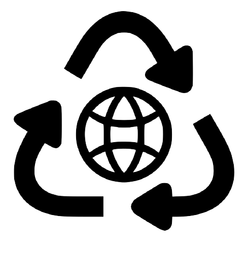
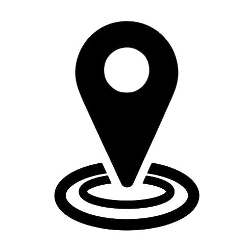
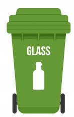
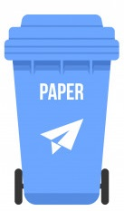
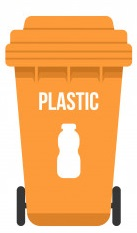
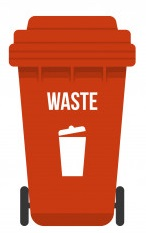

Importância da Coleta Seletiva
A coleta seletiva representa a maneira ecológica mais adequada para o descarte de lixo.

Pontos de Coleta Seletiva
Para saber pontos de Coleta Seletiva próximas à você, clique no botão abaixo!!
Reciclagem é importante
Entre os vários tipos de produtos recicláveis, podemos citar papel, plástico, alumínio, entre outros.
Clique nas lixeiras abaixo para obter dicas de como descartar cada material



